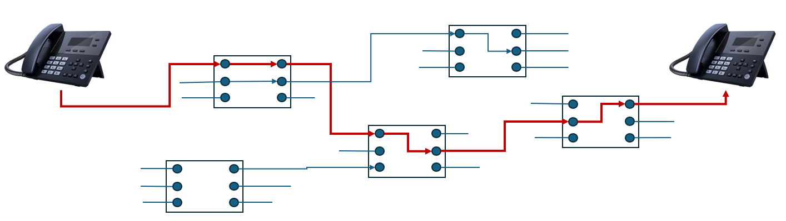
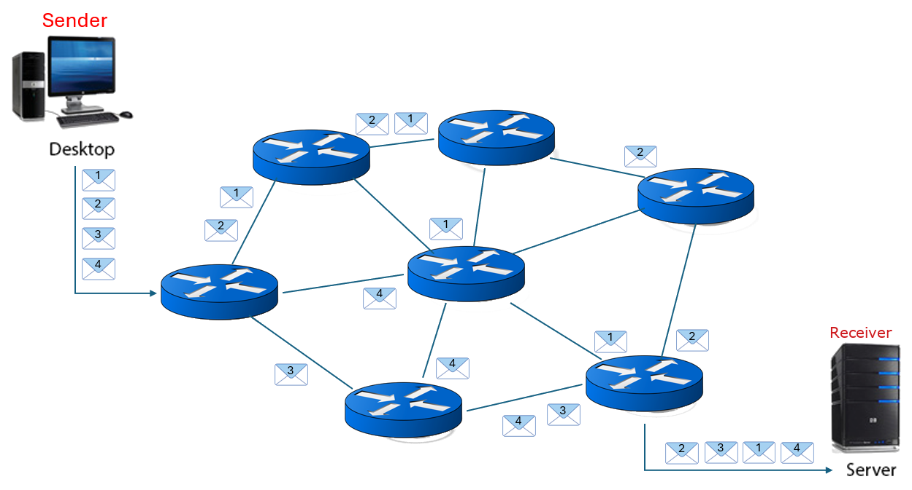

The Internet
Objectives
- Understand the structure of the Internet
- Understand the role of packet switching and routers
- Know the main components of a packet
- Define router and gateway, where are they used
- How is routing achieved?
- Define the term URL, FQDN, domain name and IP address
- Explain services provided by an Internet service registry
In 1961 Leonard Kleinrock wrote about the predecessor of the Internet, ARPANET. He envisioned a global computer network consisting of interconnected networks using standard communication protocols enabling transfer of information and communication. Kleinrock also came up with the idea of a packet-switching network which lies at the heart of the Internet. Today the Internet is almost taken for granted and used across the planet for business, communication, leisure, shopping, social activities and so much more. It is the largest Wide Area Network that there is.
Note
The Internet: The global system of interconnected computer networks that uses the Internet protocol suite (TCP/IP) to communicate between networks and devices.
Access to the Internet is provided by Internet Service Providers (ISP), some own parts of the network, others do not. Those that do can provide access and agreements to other ISPs, the level of that provision determines their tier:
- Tier 1: the backbone of the Internet providing traffic to other Tier 1 providers, exchanging data between continents
- Tier 2: regionally based companies and organisations connecting Tier 1 with Tier 3
- Tier 3: providing the "last mile" to home users and businesses
Core to the growth in adoption of the Internet is its open architecture using a set of standard protocols (TCP/IP) , a standard data format and messaging structure (packets) combined with a uniform addressing mechanism (IP Addresses).
Packet Switching
There are two methods used to connect communicating devices:
- circuit switching, and
- packet switching
Circuit switching was designed for voice communication and creates a physical path between the two hosts. Think of using a land line phone to make a call, once the connection is formed it remains connected until the call is ended.

Circuit switching is not suitable for data as the data is transmitted in spurts and the line would be idle for a lot of the time wasting bandwidth. For data, packet switching was designed.
Packet switching does not provide a fixed connection between two end points, it is connectionless. Before the message is transmitted it is split into smaller chunks, packets, and each is routed one by one from the source to the destination via the network of routers.

The path each packet takes is determined by a router. Each packet from the same message might take a different route, the next step in that route determined by the router using the address information in the packet passing it on to the next router in the network. Should a packet not arrive it can be resent.
The hosts at the source and destination control the process of transfer and communication with the Internet managing the routing of the packet.
Checking the route
You can trace the route being taken by packets from your device to a selected destination by using the tracert command from the command prompt in Windows::
Note
Repeat the command and see if the route taken is the same or different.
What's in a packet?
The packet is the unit of communication in the network. It will contain control information and the message itself (the payload). The control information, usually stored in the packet header or packet trailer, will include, e.g.
- address information: to route the packet through the network both the source address of the sending host and destination addresses of the receiving host are required, also in the address will be the port to identify the application sending the packet e.g. web browser connects to a web server on port 80; an email client will connect to an email server on its own port etc..
- sequencing information: packets may arrive at their destination out of order, so the receiver needs to rebuild the original message from these packets using the sequencing data
- acknowledgment number: if acknowledgment is required (protocol dependent) used to confirm successful receipt.
- error detection/correction: performed at various times through the protocol stack and the packet may contain a checksum, parity bits or cyclic redundancy checks to detect errors in the payload during transmission. Checksums are recalculated by the receiver and either corrected or discarded.
- hop limit or time to live: in case the packet gets caught in a closed loop, this value counts down and if zero is reached the packet is discarded
- payload: the message/data itself, variable length up to a maximum determined by the protocol (see later) being used
IP Addresses
Every computer connected to the Internet is allocated a unique address, an IP address (Internet Protocol). Its a 32-bit (IPv4) or 128-bit (IPv6) number usually expressed in dotted quad notation i.e. 192.168.1.1, 216.58.210.195 where each part is an 8-bit number.
You can obtain information about your network and IP configuration by using the commands ipconfig in Windows (or ifconfig in Linux):
Public and private IP addresses
Using 32 bits for an IP address provides for some 4 billion possible addresses (4,228,250,625 to be precise). This would have to include all addresses for both public and private use and thus, by implication, all IP addresses would be public.
Some addresses are also reserved as private addresses. These enable network administrators to extend their local network. A network might have one public IP address that all traffic on the Internet can connect with and then hundreds (even thousands) of hosts inside the organisation subnet.
There are three blocks:
| Address space | Range | Total addresses |
|---|---|---|
| 10.0.0.0/8 | 10.0.0.1 - 10.255.255.255 | 16,777,216 |
| 172.16.0.0/12 | 172.16.0.1 - 172.31.255.254 | 1,048,576 |
| 192.168.0.0/16 | 192.168.0.1 - 192.168.255.254 | 65,536 |
Inside the local network packets can be transmitted and received but they cannot be routed on the Internet and will be rejected i.e. they are non-routable.
Use Python to get your IP address
The socket library can be used to get information about your client, e.g.
Domain Name Service
Such numbers are not easy to remember so a naming system was introduced: Domain Name System (DNS). The main function of DNS is to translate easier to remember domain names such as bbc.co.uk into their IP address. Think of it like a phone book for the Internet. It is a distributed database which keeps track of domain names and their associated IP addresses. There is not one database but several and they are organised into hierarchies best visualised as a tree structure. The path through this tree is shown through the full stops in the domain name.
At the top level, the last part of the URL will be e.g. .com, .gov, .mil, .uk
| Top level domain | Description |
|---|---|
| .com | Commercial |
| .gov | US governmental organisations |
| .org | Organisation |
| .uk | United Kingdom, country specific |
These may then be chained with second level domains to give further information e.g.
bbc.co.uk- commercial organisation in the uk called bbctfl.gov.uk- a uk based government organisation called tfl
Thus, the domain name is e.g. bbc.co.uk, no www. The domain name can be qualified to identify a specific host (computer) in the domain such as wwww.bbc.co.uk for the web server, or mail.bbc.co.uk for a mail server. These are Fully Qualified Domain Names (FQDN).
Finding an IP address using Python
The socket library used earlier can also be used to find the IP address for a domain which, under the hood, is making a DNS request:
Note
If you wish to explore this further there's a good explanatory video here: https://www.youtube.com/watch?v=72snZctFFtA&feature=youtu.be
Internet registries
Domain names and associated IP addresses need to be registered before they can be used. This is the responsibility of an internet registry. Ultimately they are managed by IANA and the Internet Corporation of Assigned Names and Numbers (ICANN). ICANN is the senior organisation coordinating the databases of Internet names, with IANA distributes numbers regionally. Each region maintains its own Regional Internet Registry (RIR) that allocates IP addresses and domain names in its own region. Beneath the RIRs sit the Local Internet Registries (LIR) authorised by its RIR to distribute (sell) numbers to businesses and organisations in their locality.
In the UK Nominet hold the official registry of all .UK based domain names. They provide a lookup service: www.nominet.uk/lookup. This can be used to look up domains and check availability.
For example, entering shumphreys.co.uk tells me it is already registered but if I wanted a domain name with my own name, for say running this website, there are others available e.g. shumphreys.me.uk, or shumphreys.uk. I could then apply to a company assigned to release domains to own that domain name for a period of time in return for payment. They need to know the IP address allocated to me by my ISP and these will then be logged and searchable through DNS.